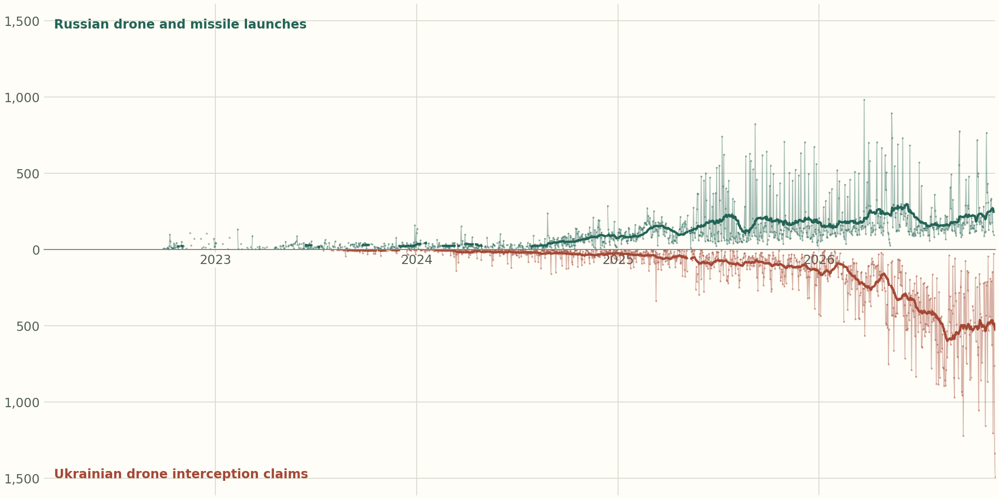

Drone and missile activity
Russian launch counts appear above the date axis. Russian claims of Ukrainian drone interceptions appear below it.

- Russian drone and missile launches
- Ukrainian drone interception claims
Reading the data
Distance from the center shows the number of individual weapons reported. Bold lines show trailing 30-day averages where at least 21 days have observations. Blank periods indicate missing data.
Recorded Russian launch minimums begin on September 28, 2022. Russian claims of Ukrainian drone interceptions begin on July 16, 2023. Ukrainian missile launches and drones outside those claims are absent, so the two series cannot establish which side launched more weapons.
Dates follow the original reporting periods. Some Russian missile quantities were withheld, and some recent interception reports are incomplete. The CSV includes source links and quality flags for individual dates.
Download daily data · Download chart

Source data by Petro Ivaniuk (CC BY-NC-SA 4.0) and Lucas Alaniz Pintos, European Observatory of Drone Incidents (CC BY 4.0). The combined data and chart are distributed under CC BY-NC-SA 4.0.